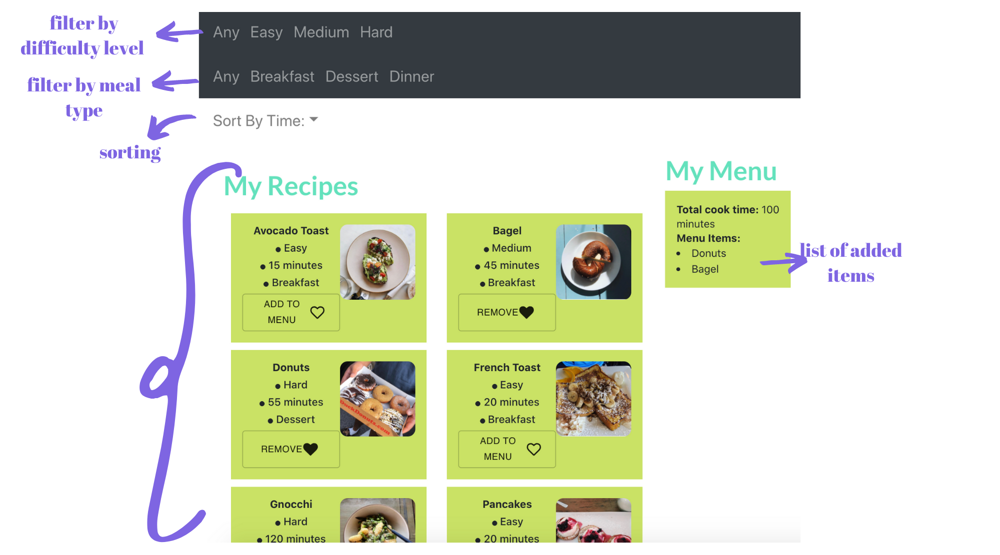

Design and implement a simple website using React that lists items and has the functionality to filter, sort, and aggregate them.
In this project, I used CSS, Javascript, and React to develop a food recipe site! This was my first project heavily using Javascript and React. While the site is minimalistic, it has the functionality to filter and sort recipes by features like difficulty level and time. You can also add recipes you are interested in to "Your Menu".
My goal was to create a simple and intuitive application that could be applicable to many sites like cooking blogs. By being able to sort by meal types and difficulty levels, users could find recipes that were appropriate for them.
I tried to implement usability principles that would allow the application to be intuitive. For one, I made sure to keep the site minamalistic and only include the information that was needed. I included simple design elements to allow users to understand when buttons or features were activated vs deactivated. For example, when a user adds a recipe to their Menu, the button not only changes its wording but also fills in the heart. I also included simple additions like alt tags to improve accessibilty.
This was the first project I've ever completed using React, so I sought out to take advantage of its features like Components. On the right we can see the strucutral hierarchy I implemented. I first created a RecipeList, which contianed all the recipes and their corresponding information. I then passed this list into a FilteredList component. This component handled many things. For one, it instantiated a NavBar component, the component that creates and displays the sorting and filtering bootstrap navigation bars. Secondly, FilteredList handles the logic of filtering and sorting the RecipeList, and it then passes this new filtered/sorted list into the DisplayList component. This component adds DisplayItem components (which is in charge of creating a nice layout for each item) in a dynamic flexbox layout. Lastly, the FilteredList component displays the menu section, by calling the DisplayMenu component which maps out the added menu items. Again, the FilteredList component handles the functionality of adding items to the menu and calculating added items aggregate cook times.
For more information on the structure, see the application's README.
I was able to create this project and fulfill my original goal. While it was challenging to learn use a different language
and new libraries, I was happy with the final outcome and felt that I was able to take advantage of their respective features.
While my final application was simplistic and highly generalized, it was fully functional and could be easily customized.
You can checkout the application: Here.
My code and corresponding README can be found on my github: Here.